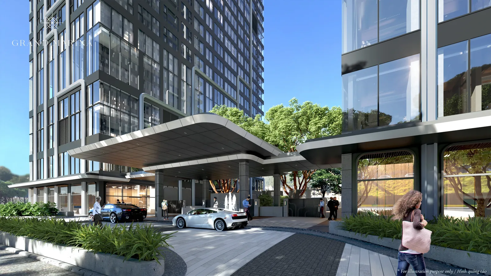
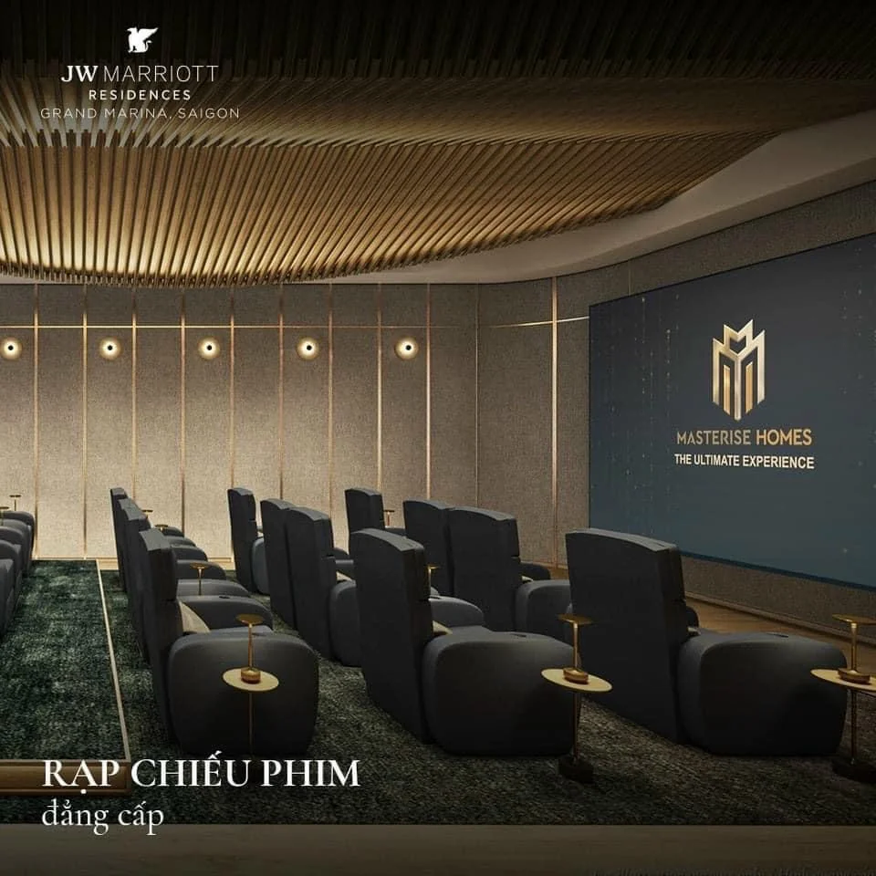
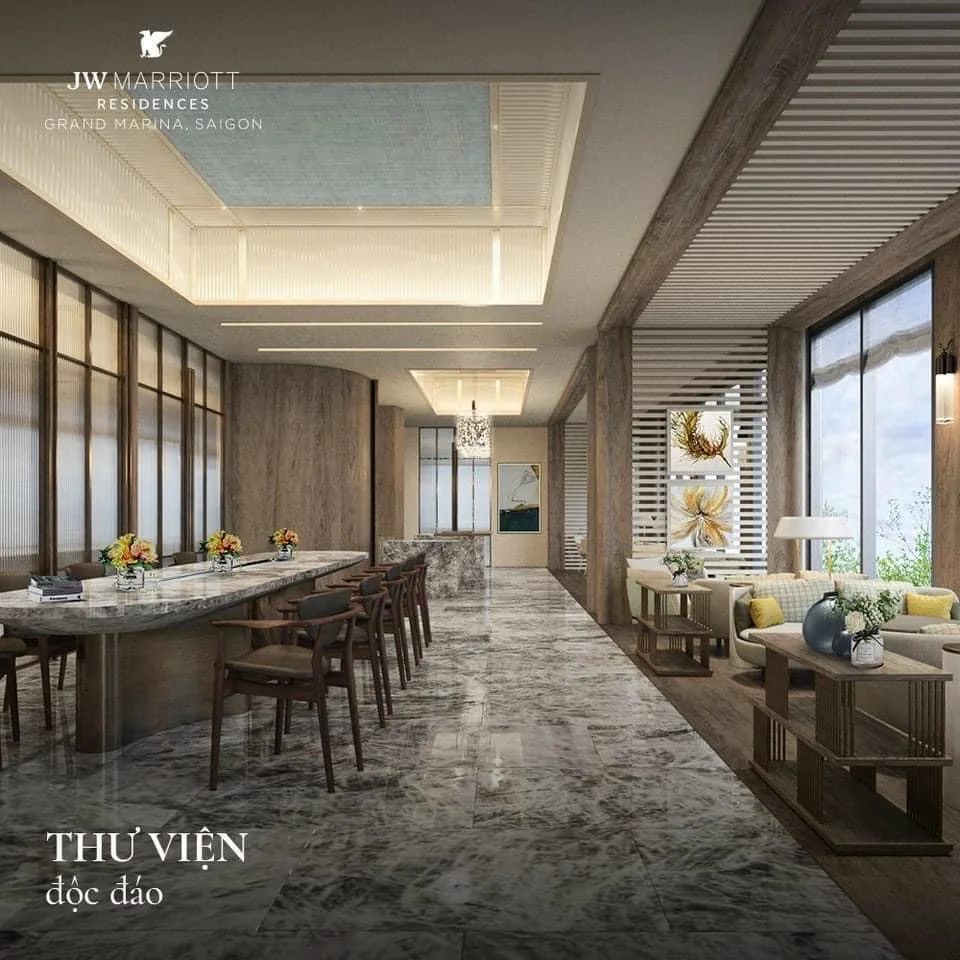
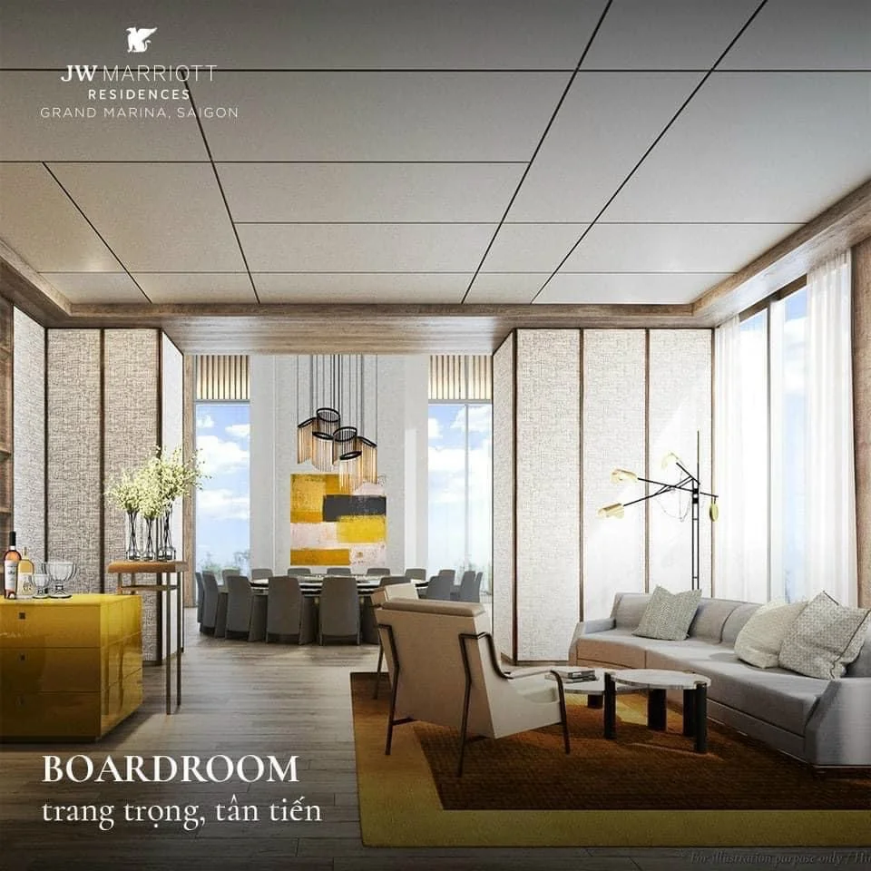
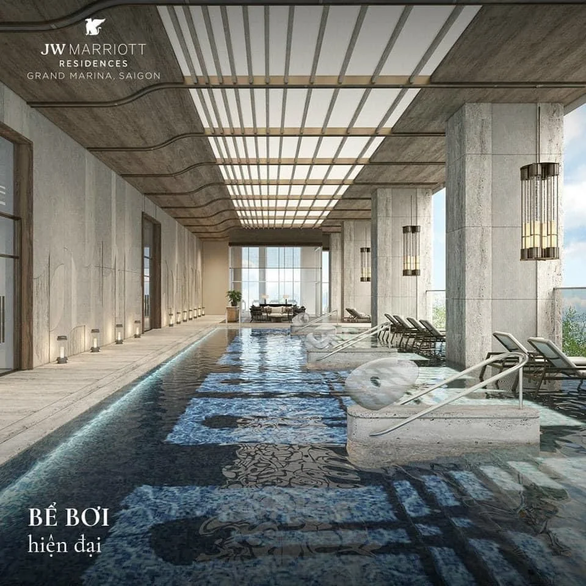

Location is often considered the most important factor in real estate value. Grand Marina Saigon is situated at Ba Son — the last large-scale developable land in central District 1, along the Saigon River. This is what real estate experts call an "irreplaceable location."

Ba Son — Historic heart of Saigon
The Ba Son area has more than 200 years of history, once home to the largest shipyard in French Indochina. After the relocation, this site has become one of the most strategic urban development areas in central HCMC.
Key location characteristics:
- Along the Saigon River, on the eastern edge of District 1
- Directly connected to Nguyen Hue walking street via Ton Duc Thang Street
- Adjacent to Thu Thiem — HCMC's future financial center
- On Metro Line 1 Ben Thanh — Suoi Tien (Ba Son station)
Official address
No. 02 Ton Duc Thang, Ben Nghe Ward, District 1, Ho Chi Minh City
Distances (official data from developer)
| Destination | Distance |
|---|---|
| Saigon River | 200m |
| Ba Son Metro station (Line 1) | 250m |
| Saigon Zoo & Botanical Gardens | Within 500m |
| City landmarks (Opera House, Nguyen Hue, Ben Thanh) | Within 1km |
| Thu Thiem Tunnel | ~2km |
| Landmark 81 | ~4km |
| Tan Son Nhat Airport | ~8km |

Surrounding amenities
Shopping & Dining
- Vincom Center Dong Khoi — Premium mall, 1km
- Saigon Centre & Takashimaya — Japanese department store, 1.2km
- Diamond Plaza — Mixed-use complex, 1.3km
- Ben Thanh Market — Saigon icon, 1.5km
- Hundreds of fine-dining restaurants along Dong Khoi, Le Loi, Nguyen Hue
International education
- British International School (BIS) — Tu Xuong, District 3
- International School Saigon Pearl (ISSP) — Binh Thanh District
- Australian International School (AIS) — Thu Thiem
- University of Social Sciences & Humanities — District 1
Healthcare
- FV Hospital (Franco-Vietnamese) — District 7
- University Medical Center HCMC — District 5
- Vinmec Central Park — Binh Thanh
- Family Medical Practice (FMP) premium clinics
Culture & Entertainment
- Saigon Opera House, Central Post Office
- Vietnam History Museum, Fine Arts Museum
- Bach Dang Park along the Saigon River
- Bui Vien backpacker street, 2km away
Metro Line 1 — Infrastructure catalyst
Metro Line 1 Ben Thanh — Suoi Tien is HCMC's first urban rail line. Ba Son Station is right next to Grand Marina Saigon, with direct connections to:
- Ben Thanh Station (central) — 1 minute
- Opera House Station — 30 seconds
- An Phu, Thao Dien Stations (District 2) — 5–8 minutes
- Suoi Tien Station (National University) — 25 minutes
Metro operation is expected to increase property values along the line by 15–30% within 3–5 years post-launch, based on experience in similar cities (Bangkok, Manila, Kuala Lumpur).
Premium Saigon River views
One of the greatest values of Grand Marina Saigon is its breathtaking views — across the Saigon River, Thu Thiem, and Landmark 81 — especially at sunset and when the city lights come on.




Thu Thiem New Urban Area
Across the Saigon River from Grand Marina Saigon is the Thu Thiem New Urban Area — HCMC's future financial center spanning 657 hectares. Planning includes:
- International financial center
- Central plaza and riverside park
- Thu Thiem Bridge 2 (completed) — direct connection to Ba Son
- International cultural, sports, and convention complexes
Why this location matters
Land in District 1 along the Saigon River has nearly all been developed. Grand Marina Saigon is one of very few large-scale projects that satisfies all three criteria: central District 1 + riverside + international brand. This scarcity creates lasting value over time.